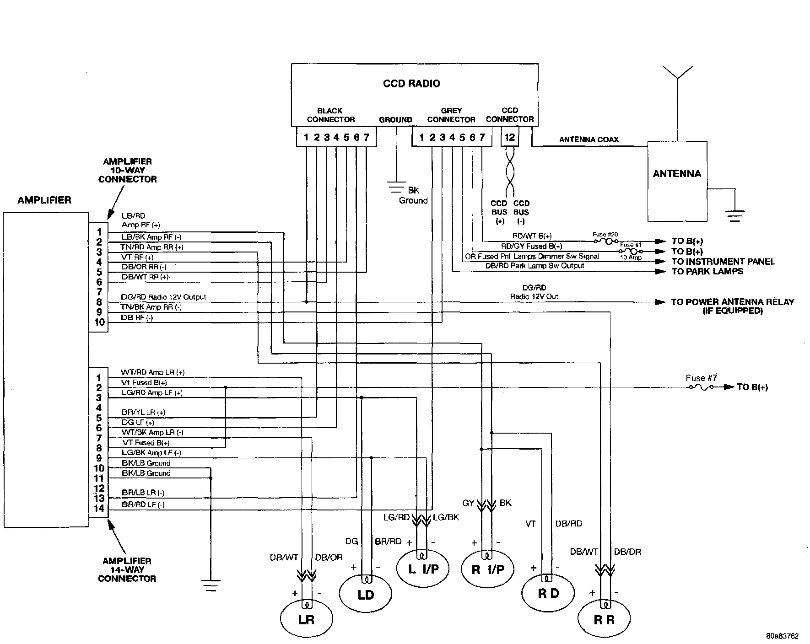

Operation CHARM
: Car repair manuals for everyone.
Русский
Home
>>
Jeep
>>
1997
>>
Grand Cherokee 4WD L6-4.0L VIN S
>>
Repair and Diagnosis
>>
Accessories and Optional Equipment
>>
Radio, Stereo, and Compact Disc
>>
Radio/Stereo
>>
Diagrams
>>
Electrical Diagrams
>>
Radio CCD Circuit
Radio CCD Circuit
CCD Radio And Amplifier:
